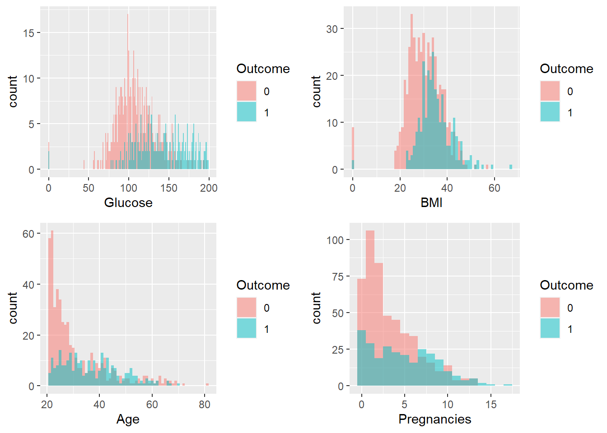
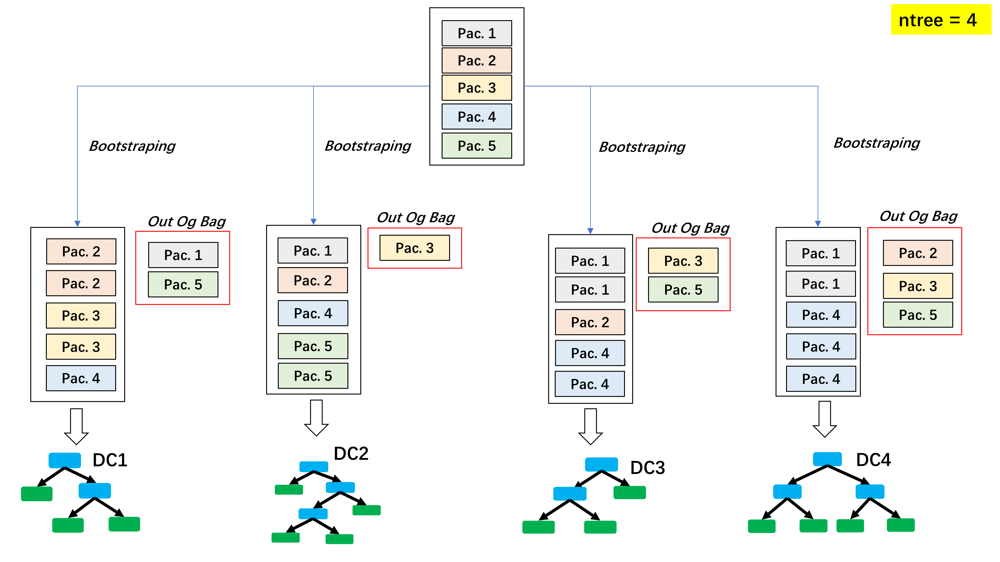
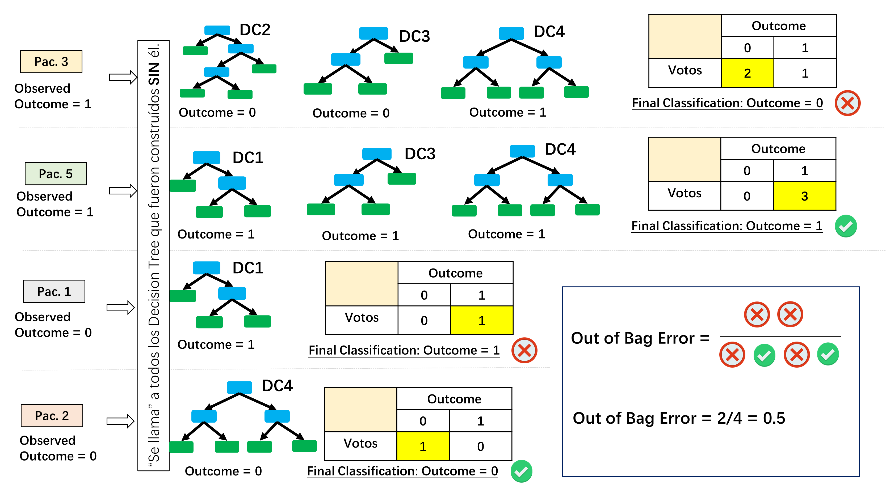
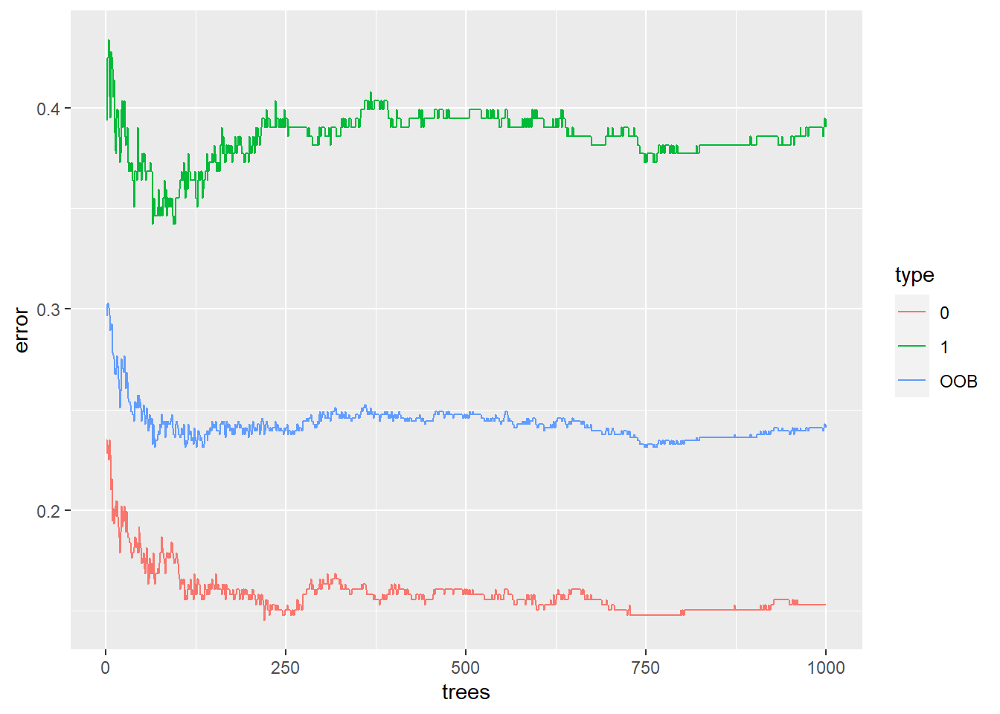
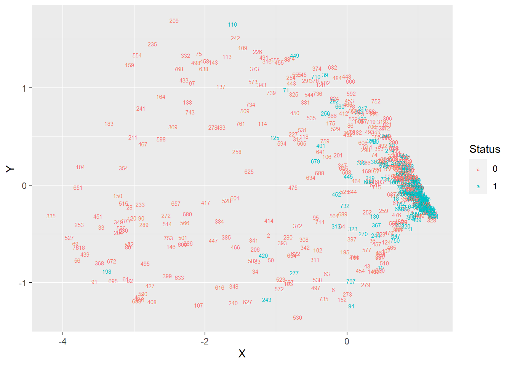

library(knitr)
library(ggplot2)
library(ggpubr)
library(cowplot)
library(randomForest)
library(dplyr)
library(tidyr)
library(caret)Random Forest
Librerías
Preparación de datos
Utilizaremos el siguiente dataset sobre diabetes disponible en Kaggle. Todos los pacientes pertenecen a la herencia indígena pima (subgrupo de nativos americanos) y son mujeres de 21 años o más.
diabetes <- read.csv("diabetes2.csv")Exploración de datos
Estructura
Show the code
kable(head(diabetes))| Pregnancies | Glucose | BloodPressure | SkinThickness | Insulin | BMI | DiabetesPedigreeFunction | Age | Outcome |
|---|---|---|---|---|---|---|---|---|
| 6 | 148 | 72 | 35 | 0 | 33.6 | 0.627 | 50 | 1 |
| 1 | 85 | 66 | 29 | 0 | 26.6 | 0.351 | 31 | 0 |
| 8 | 183 | 64 | 0 | 0 | 23.3 | 0.672 | 32 | 1 |
| 1 | 89 | 66 | 23 | 94 | 28.1 | 0.167 | 21 | 0 |
| 0 | 137 | 40 | 35 | 168 | 43.1 | 2.288 | 33 | 1 |
| 5 | 116 | 74 | 0 | 0 | 25.6 | 0.201 | 30 | 0 |
Descripción
| Variable | Descripción |
|---|---|
| Pregnancies | Número de embarazos. |
| Glucose | Glucosa (en la sangre). |
| BloodPresure | Presión sanguínea. |
| SkinThickness | Grosor de la piel. |
| Insulin | Insulina. |
| BMI | Índice de masa corporal. |
| DiabetesPedigreeFunction | Puntaje que mide la posibilidad de tener diabetes basado en historia familiar. |
| Age | Edad. |
| Outcome | 0: No diabetes, 1: Sí diabetes |
str(diabetes)'data.frame': 768 obs. of 9 variables:
$ Pregnancies : int 6 1 8 1 0 5 3 10 2 8 ...
$ Glucose : int 148 85 183 89 137 116 78 115 197 125 ...
$ BloodPressure : int 72 66 64 66 40 74 50 0 70 96 ...
$ SkinThickness : int 35 29 0 23 35 0 32 0 45 0 ...
$ Insulin : int 0 0 0 94 168 0 88 0 543 0 ...
$ BMI : num 33.6 26.6 23.3 28.1 43.1 25.6 31 35.3 30.5 0 ...
$ DiabetesPedigreeFunction: num 0.627 0.351 0.672 0.167 2.288 ...
$ Age : int 50 31 32 21 33 30 26 29 53 54 ...
$ Outcome : int 1 0 1 0 1 0 1 0 1 1 ...table(diabetes$Outcome)
0 1
500 268 Con table obtenemos la distribución de pacientes en el dataset en relación a si tienen Diabetes o no:
- 500 pacientes SIN diabetes
- 268 pacientes CON diabetes
Note que Outcome aparece como variable numérica, se cambiará a variable categórica.
diabetes$Outcome <- as.factor(diabetes$Outcome)Visualización
Show the code
pGlucoseOutcome <- ggplot(diabetes, aes(x = Glucose, fill = Outcome)) +
geom_histogram(binwidth=1, alpha=.5, position="identity")
pBMIOutcome <- ggplot(diabetes, aes(x = BMI, fill = Outcome)) +
geom_histogram(binwidth=1, alpha=.5, position="identity")
pAgeOutcome <- ggplot(diabetes, aes(x = Age, fill = Outcome)) +
geom_histogram(binwidth=1, alpha=.5, position="identity")
pPregnanciesOutcome <- ggplot(diabetes, aes(x = Pregnancies, fill = Outcome)) +
geom_histogram(binwidth=1, alpha=.5, position="identity")
ggarrange(pGlucoseOutcome, pBMIOutcome, pAgeOutcome, pPregnanciesOutcome,
ncol = 2, nrow = 2)
Random Forest
Datos de entrenamiento y de prueba
# Número de pacientes en el dataset
n <- nrow(diabetes)
# Se muestrea aleatoriamente una proporción p de pacientes para el
# dataset de prueba
p <- 0.20
pacientes_test <- ceiling(p * n) # Se redondea el número
# Se muestrean aleatoriamente p * n indexes
set.seed(110) # Semilla
index_test <- sample(1:n, size = pacientes_test)
# Test y train datasets
diabetes_test <- diabetes[index_test,]
diabetes_train <- diabetes[-index_test,]Ajuste del modelo
rFmodel <- randomForest(
Outcome ~ .,
data = diabetes_train,
proximity = TRUE,
ntree = 1000
)Resumen del modelo
rFmodel
Call:
randomForest(formula = Outcome ~ ., data = diabetes_train, proximity = TRUE, ntree = 1000, )
Type of random forest: classification
Number of trees: 1000
No. of variables tried at each split: 2
OOB estimate of error rate: 24.1%
Confusion matrix:
0 1 class.error
0 327 59 0.1528497
1 89 139 0.3903509Usando datos Out Of Bag (OOB, más adelante veremos este concepto), se tiene respecto a la base de entrenamiento que:
De 386 pacientes SIN diabetes (0), 327 son clasificados correctamente (Outcome = 0) y 59 son clasificados incorrectamente (Outcome = 1). El error de clasificación para esta clase es de \(\dfrac{59}{327+59} = \dfrac{59}{386} = 0.153\).
De 228 pacientes CON diabetes (1), 139 son clasificados correctamente (Outcome = 1) y 89 son clasificados incorrectamente (Outcome = 0). El error de clasificación para esta clase es \(\dfrac{89}{89+139}=\dfrac{89}{228} = 0.390\).
¿Cuántos árboles (trees) son necesarios?
Out of Bag


Con el Out of Bag (OOB) Error , ya que es similar a Leave One Out, no es necesario realizar cross validation. Esto implica que sería posible entrenar el Random Forest con toda la base de datos.
Parámetro ntree
Ahora, para determinar el número de Decision Trees necesarios, se analiza el comportamiento del OOB respecto al número de Decision Trees.
Show the code
# Dataframe for saving OOB
oob_error_date <- as.data.frame(rFmodel$err.rate) %>%
mutate(trees = row_number()) %>%
pivot_longer(
cols = c("OOB", "1", "0"),
names_to = "type",
values_to = "error"
)
ggplot(oob_error_date, aes(x = trees, y = error, color = type)) +
geom_line()
Se selecciona un valor para el cual se estabilice el OOB, en este caso, podría ser 750.
MDS plot
Show the code
# Code from: Josh Starmer (StatQuest)
# TODO: Analysis
distance_matrix <- dist(1-rFmodel$proximity)
mds <- cmdscale(distance_matrix, eig = TRUE, x.ret = TRUE)
mds_var_per <- round(mds$eig/sum(mds$eig) * 100, 1)
mds_values <- mds$points
mds_data <- data.frame(
Sample = rownames(mds_values),
X = mds_values[,1],
Y = mds_values[,2],
Status = diabetes_train$Outcome)
ggplot(data = mds_data, aes(x = X, y = Y, label = Sample))+
geom_text(aes(color = Status), size = 2)
Comparación con Regresión Logística
Ajuste de modelo de regresión logística
# define training control
train_control <- trainControl(method = "cv", number = 10)
set.seed(999)
# train the model on training set
rLmodel <- train(
Outcome ~ .,
data = diabetes_train,
trControl = train_control,
method = "glm",
family=binomial()
)
# print scores
1-rLmodel$results[,"Accuracy"][1] 0.2363564Prediccion con datos de prueba (test)
rF_prediction <- predict(rFmodel, newdata = diabetes_test)
rL_prediction <- predict(rLmodel, newdata = diabetes_test, type = "raw")
predictions_test <- data.frame(observed = diabetes_test$Outcome,
rF = rF_prediction,
rL = rL_prediction)table(predictions_test$rL, predictions_test$observed)
0 1
0 98 16
1 16 24table(predictions_test$rF, predictions_test$observed)
0 1
0 94 15
1 20 25